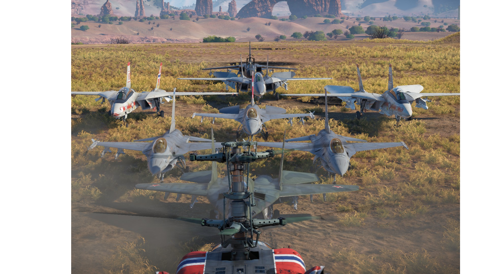

War Thunder Squadron battles
On this website you will find out what you need to do to increase the chance of wining squadron battles against other squads. For now there will mainly be tips for ground vehicles, but later on I will also add some tips for planes and helis.